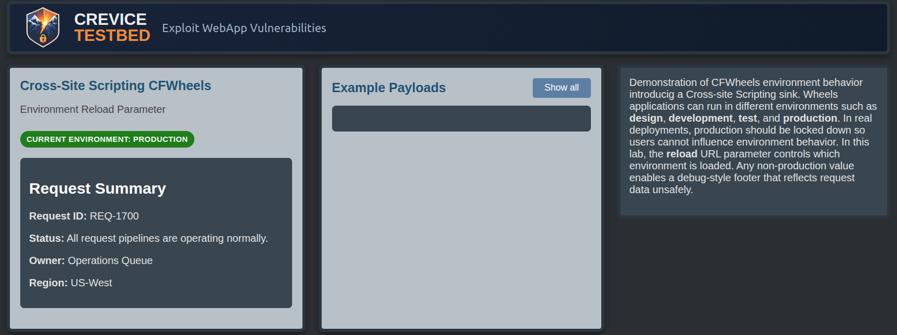
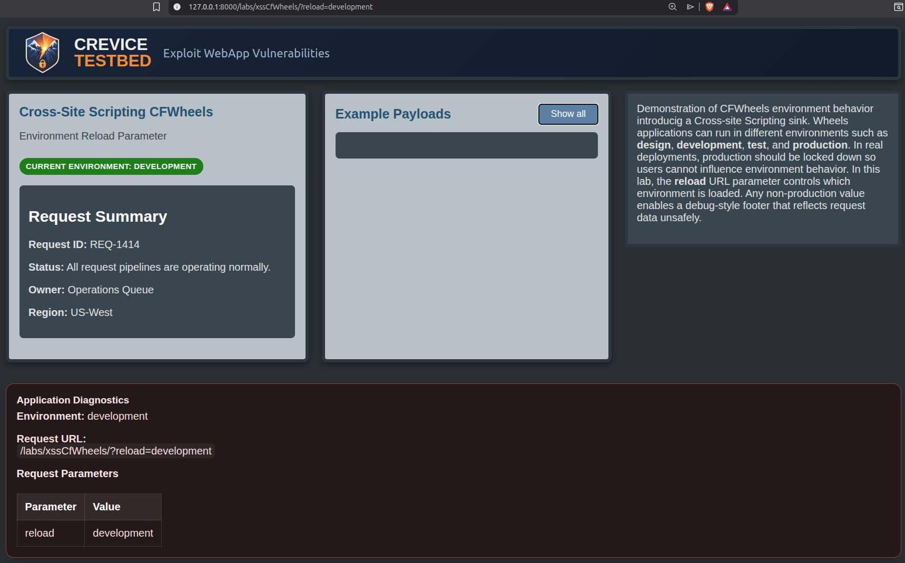
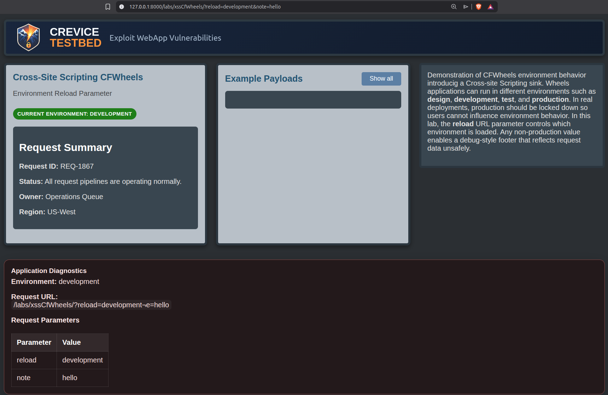
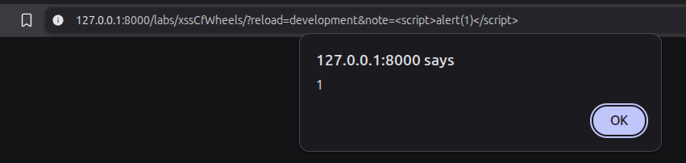
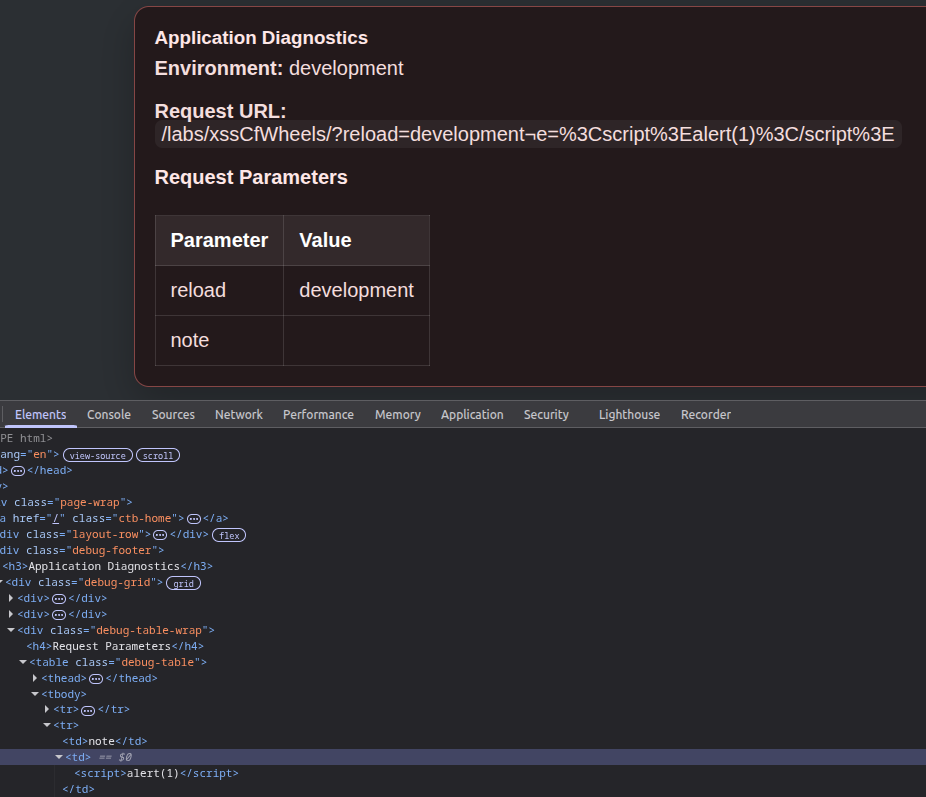

CFWheels Reload XSSReflected XSS Through Exposed Environment Switching and Diagnostics Output

Summary
This Crevice Testbed lab recreates a server misconfiguration involving Adobe ColdFusion applications using CFWheels. CFWheels supports changing the application environment with a URL parameter called reload. In non-production modes, the framework exposes a diagnostics panel that reflects URL parameters and their values into the page.
Adobe recommends disabling environment switching in production. In this lab, that safeguard was forgotten. A user can switch the app into development mode with reload=development, expose the diagnostics panel, and inject a reflected XSS payload through an additional URL parameter.
Lab Objectives
- Use the
reloadURL parameter to switch the application into development mode - Observe that the diagnostics panel reflects URL parameters and values
- Add a benign parameter and confirm it appears in the panel
- Replace that value with a script payload and trigger XSS
- Inspect the DOM and confirm the payload is rendered as an actual script element
Technical Walkthrough
The lab begins with the application behaving like a production-facing deployment. But the server still honors the CFWheels reload parameter.
This means a user can force the application into a different environment just by changing the URL using?reload=development

Once the environment changes, the application exposes a diagnostics panel intended for non-production use. That panel displays request data, including URL parameters.
Next, append an additional benign parameter: ¬e=hello
The diagnostics panel reflects the new parameter and its value. That confirms the page isn’t only showing the framework control parameter. It’s reflecting attacker-controlled request data more generally.

Replace the benign value with a basic XSS payload: <script>alert(1)</script>
The payload executes in the browser, confirming reflected XSS exposed through a development diagnostics feature.

The user can inspect the document in the browser developer tools and see that the payload was rendered into the DOM as an actual <script> element rather than harmless text.

The Logic Failure
The root issue is in Adobe's poor choice to reflect user controlled data into the browser unsafely. There is no good reason for this even in a development environment.
But I digress.
The problem starts server-side. The application shouldn’t allow environment switching in a production-facing deployment. Once that safeguard fails, a development-only diagnostics panel becomes reachable by an user. That panel then reflects attacker-controlled URL parameters into the page without safe output encoding.
The failure stack looks like this:
- Environment switching left enabled
- User forces app into development mode
- Diagnostics panel becomes accessible
- User-controlled parameters are reflected
- Reflected input is rendered unsafely
- Browser-executable script runs
The XSS sink only becomes reachable because a server misconfiguration exposed functionality that shouldn’t have been available in the first place.
A safer design would assume that environment switching and diagnostics features are operational controls, not user features:
- disable environment switching in production
- restrict diagnostics interfaces to trusted users and trusted environments
- apply context-appropriate output encoding even in internal tooling
- treat reflected request data as untrusted input everywhere it appears
Forgetting that is how you turn a framework convenience feature into an exploit path.
Key Takeaways
- Debug functionality exposed in production is usually an information disclosure issue, but it can also become an active code execution path in the browser
- Environment switching shouldn’t be reachable from a public-facing deployment
- Misconfiguration can be the thing that unlocks exploitation rather than the bug being directly exposed by default
- Diagnostics pages are still web pages and still need safe output handling
- Reflected XSS can emerge from internal tooling when trusted-only assumptions are allowed to leak into production
- If an attacker can reach a development feature, it has to be treated as part of the application’s attack surface
- As a defense-in-depth control, user-controllable output should always be handled safely, even in develompent environments